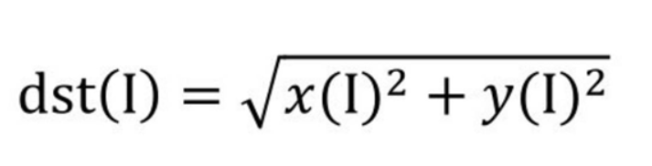
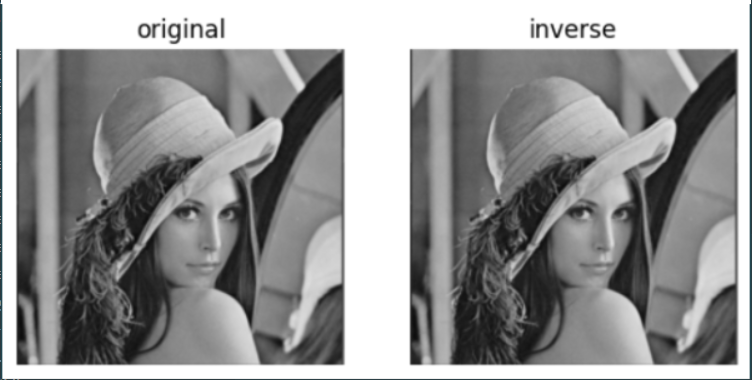

【基础】openCV实现傅里叶变换
openCV提供了函数cv2.dft()和cv2.idft()来实现傅里叶变换和逆傅里叶变换
1.傅里叶变换
经过函数cv2.dft()的变换后，得到了原始图像的频谱信息。
注意：
1.对于参数“原始图像”，要首先使用np.float32()函数将图像转换成np.float32格式。
2.“转换标识”的值通常为“cv2.DFT_COMPLEX_OUTPUT”，用来输出一个复数阵列。
3.函数cv2.dft()返回的结果是双通道的，第1个通道是结果的实数部分，第2个通道是结果的虚数部分。
该语句将频谱图像dft中的零频率分量移到频谱中心，得到了零频率分量位于中心的频谱图像dftshift。 经此处理后，频谱图像还只是一个由实部和虚部构成的值。要将其显示出来，还要做进一步的处理。
函数cv2.magnitude()可以计算频谱信息的幅度。
参数1：浮点型x坐标值，也就是实部。
参数2：浮点型y坐标值，也就是虚部，它必须和参数1具有相同的size
函数cv2.magnitude()的返回值是参数1和参数2的平方和的平方根

得到频谱信息的幅度后，通常还要对幅度值做进一步的转换，以便将频谱信息以图像的形式展示出来。简单来说，就是需要将幅度值映射到灰度图像的灰度空间[0, 255]内，使其以灰度图像的形式显示出来。
这里使用的公式为：
import numpy as np
import cv2
img = cv2.imread('lena.jpg',0)
dft = cv2.dft(np.float32(img),flags = cv2.DFT_COMPLEX_OUTPUT)
dftShift = np.fft.fftShift(dft)
result = 20*np.log(cv2.magnitude(dftShift[:,:,1])) #两个参数，需要拆分通道
经过上述程序,就实现了傅里叶变换
可以通过print展示其频谱信息
print(dft)
print(dftShift)
print(result)
2.逆傅里叶变换
在OpenCV中，使用函数cv2.idft()实现逆傅里叶变换，该函数是傅里叶变换函数cv2.dft()的逆函数。其语法格式为：
注意: 在进行逆傅里叶变换后，得到的值仍旧是复数，需要使用函数cv2.magnitude()计算其幅度。
用OpenCV函数对图像进行傅里叶变换、逆傅里叶变换，并展示原始图像及经过逆傅里叶变换后得到的图像。
import cv2
import numpy as np
import matplotlib.pyplot as plt
img=cv2.imread('lena.jpg',0)
dft=cv2.dft(img_float32,flags=cv2.DFT_COMPLEX_OUTPUT)
dftShift=np.fft.fftShift(dft)
ishift = np.fft.ifftshift(dftshift)
iImg = cv2.idft(ishift)
iImg = cv2.magnitude(iImg[:,:,:0],iImg[:,:,:1]) #计算幅度
plt.subplot(121),plt.imshow(img,cmap='gray')
plt.title('original'),plt.axis('off')
plt.subplot(122),plt.imshow(iImg,cmap='gray')
plt.title('inverse'),plt.axis('off')
plt.show()
